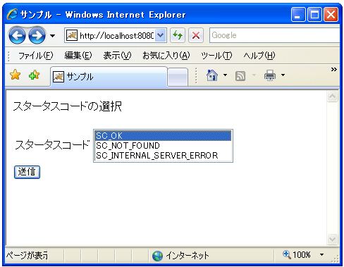
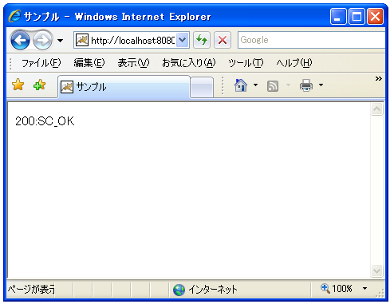
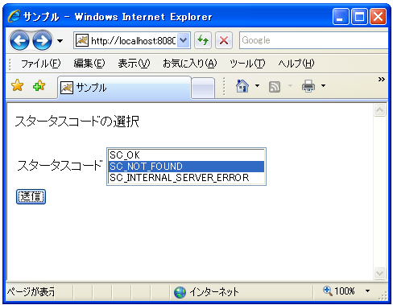
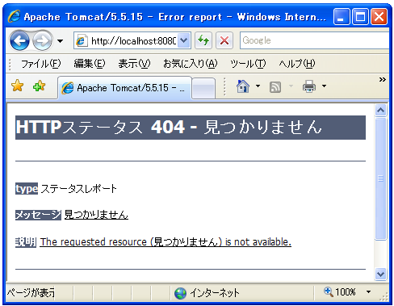

ステータスコードã�®è¨å®š(setStatus)
クライアントã�«ãƒ¬ã‚¹ãƒ�ンスを返ã�™éš›ã�«ã€�ステータスコードをè¨å®šã�—ã�ªã�‹ã�£ã�Ÿå ´å�ˆã�«ã�¯ãƒ‡ãƒ•ã‚©ãƒ«ãƒˆã�§ã€ŒSC_OKã€�ã�Œè¨å®šã�•ã‚Œã�¾ã�™ã€‚æ£å¸¸ã�ªãƒ‡ãƒ¼ã‚¿ã‚’è¿”ã�™å ´å�ˆã�«ã�¯ã�“ã�®ã�¾ã�¾ã�§æ§‹ã�„ã�¾ã�›ã‚“ã�Œä»–ã�®ã‚¹ãƒ†ãƒ¼ã‚¿ã‚¹ã‚³ãƒ¼ãƒ‰ã‚’クライアントã�«è¿”ã�™æ–¹æ³•ã‚’確èª�ã�—ã�¾ã�™ã€‚
ステータスコードをè¨å®šã�™ã‚‹ã�«ã�¯ã€ŒHttpServletResponseã€�インターフェースã�§å®šç¾©ã�•ã‚Œã�¦ã�„る「setStatusã€�メソッドを使ã�„ã�¾ã�™ã€‚
setStatus public void setStatus(int sc)
Sets the status code for this response. This method is used to set the return status code when there is no error (for example, for the status codes SC_OK or SC_MOVED_TEMPORARILY). If there is an error, and the caller wishes to invoke an error-page defined in the web application, the sendError method should be used instead. The container clears the buffer and sets the Location header, preserving cookies and other headers. Parameters: sc - the status code
ã�“ã�®ãƒ¡ã‚½ãƒƒãƒ‰ã‚’使ã�†å ´å�ˆã�¯ã‚¨ãƒ©ãƒ¼ã�Œç™ºç”Ÿã�›ã�šã�«æ£å¸¸ã�«ãƒ‡ãƒ¼ã‚¿ã�Œé€�ä¿¡ã�•ã‚Œã‚‹å ´å�ˆã�«åˆ©ç”¨ã�—ã�¾ã�™ã€‚引数ã�«ã�¯ã€ŒHttpServletResponseã€�インターフェースã�§å®šç¾©ã�•ã‚Œã�¦ã‚‹å®šæ•°ã‚’使用ã�—ã�¾ã�™ã€‚一部を抜粋ã�™ã‚‹ã�¨æ¬¡ã�®ã‚ˆã�†ã�ªã‚‚ã�®ã�Œã�‚ã‚Šã�¾ã�™ã€‚
| コード | 定数 |
|---|---|
| 200 | SC_OK |
| 204 | SC_NO_CONTENT |
| 301 | SC_MOVED_PERMANENTLY |
| 302 | SC_MOVED_TEMPORARILY |
| 403 | SC_FORBIDDEN |
| 404 | SC_NOT_FOUND |
| 500 | SC_INTERNAL_SERVER_ERROR |
| 503 | SC_SERVICE_UNAVAILABLE |
ステータスコードã�¯ä»–ã�«ã‚‚数多ã��用æ„�ã�•ã‚Œã�¦ã�„ã�¾ã�™ã€‚200番å�°ã�¯ã€Œæˆ�功ã€�ã€�300番å�°ã�¯ã€Œè»¢é€�ã€�ã€�400番å�°ã�¯ã€Œã‚¯ãƒ©ã‚¤ã‚¢ãƒ³ãƒˆå�´ã�®ã‚¨ãƒ©ãƒ¼ã€�ã€�500番å�°ã�¯ã€Œã‚µãƒ¼ãƒ�å�´ã�®ã‚¨ãƒ©ãƒ¼ã€�を表ã�—ã�¾ã�™ã€‚「setStatusã€�メソッドã�¯200番å�°å�ˆã�¯300番å�°ã�®ã‚¹ãƒ†ãƒ¼ã‚¿ã‚¹ã‚³ãƒ¼ãƒ‰ã‚’è¨å®šã�™ã‚‹æ™‚ã�«åˆ©ç”¨ã�—ã�¾ã�™ã€‚
「setStatusã€�メソッドを使ã�£ã�¦ã‚¹ã‚¿ãƒ¼ã‚¿ã‚¹ã‚³ãƒ¼ãƒ‰ã�®è¨å®šã‚’è¡Œã�£ã�Ÿå ´å�ˆã€�ç”»é�¢ã�«è¡¨ç¤ºã�™ã‚‹å†…容ã�¯åˆ¥é€”作æˆ�ã�™ã‚‹å¿…è¦�ã�Œã�‚ã‚Šã�¾ã�™ã€‚
エラー系ã�®ã‚¹ã‚¿ãƒ¼ã‚¿ã‚¹ã‚³ãƒ¼ãƒ‰ã�®è¨å®š
エラー系ã�®400番å�°å�Šã�³500番å�°ã�®ã‚¹ãƒ†ãƒ¼ã‚¿ã‚¹ã‚³ãƒ¼ãƒ‰ã‚’è¨å®šã�™ã‚‹å ´å�ˆã�«ã�¯ã€ŒHttpServletResponseã€�インターフェースã�§å®šç¾©ã�•ã‚Œã�¦ã�„る「sendErrorã€�メソッドを使ã�„ã�¾ã�™ã€‚
sendError
public void sendError(int sc)
throws java.io.IOException
Sends an error response to the client using the specified status code
and clearing the buffer.
If the response has already been committed, this method throws an
IllegalStateException. After using this method, the response should be
considered to be committed and should not be written to.
Parameters:
sc - the error status code
Throws:
java.io.IOException - If an input or output exception occurs
java.lang.IllegalStateException - If the response was committed
before this method call
「sendErrorã€�メソッドを使ã�†å ´å�ˆã�«ã�¯ã‚¹ã‚¿ãƒ¼ã‚¿ã‚¹ã‚³ãƒ¼ãƒ‰ã�®è¨å®šã‚’è¡Œã�†ã�¨å�Œæ™‚ã�«ç”»é�¢ã�«è¡¨ç¤ºã�•ã‚Œã‚‹å†…容を自動ã�§ä½œæˆ�ã�—ã�¾ã�™ã€‚ã��ã�®ç‚ºã€�一般的ã�ªã‚¨ãƒ©ãƒ¼è¡¨ç¤ºã�Œç”»é�¢ã�«è¡Œã‚�ã‚Œã�¾ã�™ã€‚
ã‚‚ã�—独自ã�®ãƒ¡ãƒƒã‚»ãƒ¼ã‚¸ã‚’ç”»é�¢ã�«è¡¨ç¤ºã�—ã�Ÿã�„å ´å�ˆã�«ã�¯å¼•æ•°ã�®ç•°ã�ªã‚‹ã€ŒsendErrorã€�メッセージã�Œç”¨æ„�ã�•ã‚Œã�¦ã�„ã�¾ã�™ã€‚
sendError
public void sendError(int sc, java.lang.String msg)
throws java.io.IOException
Sends an error response to the client using the specified status. The server defaults to creating the response to look like an HTML-formatted server error page containing the specified message, setting the content type to "text/html", leaving cookies and other headers unmodified. If an error-page declaration has been made for the web application corresponding to the status code passed in, it will be served back in preference to the suggested msg parameter. If the response has already been committed, this method throws an IllegalStateException. After using this method, the response should be considered to be committed and should not be written to. Parameters: sc - the error status code msg - the descriptive message Throws: java.io.IOException - If an input or output exception occurs java.lang.IllegalStateException - If the response was committed
ã�©ã�®ã‚ˆã�†ã�«è¡¨ç¤ºã�•ã‚Œã‚‹ã�‹ã�¯ã‚µãƒ¼ãƒ–レットコンテナã�«ä¾�å˜ã�—ã�¾ã�™ã�Œã€�引数ã�«æŒ‡å®šã�—ã�Ÿæ–‡å—列ã�Œã‚¨ãƒ©ãƒ¼ãƒšãƒ¼ã‚¸å†…ã�«å�ˆã‚�ã�›ã�¦è¡¨ç¤ºã�•ã‚Œã�¾ã�™ã€‚
サンプルプãƒã‚°ãƒ©ãƒ
��簡��サンプル�試��見��。別途用���HTMLフォーム�ら希望�るステータスコードを�付�る���れ�対応��処�を行���。
フォーム���れるHTMLページ��次�よ��簡��も���。
<!DOCTYPE html PUBLIC "-//W3C//DTD HTML 4.01//EN" "http://www.w3.org/TR/html4/strict.dtd"> <html lang="ja"> <head> <meta http-equiv="Content-Type" Content="text/html;charset=Shift_JIS"> <title>サンプル</title> </head> <body> <p>スタータスコード���</p> <form action="/sample/ResponseSample3" method="get"> <table> <tr> <td>スタータスコード</td> <td> <select name="code" size="3" multiple> <option value="200">SC_OK</option> <option value="404">SC_NOT_FOUND</option> <option value="500">SC_INTERNAL_SERVER_ERROR</option> </select> </td> </tr> </table> <input type="submit" name="button1" value="�信"> </form> </body> </html>
次�フォーム�ら�られ��るリクエストパラメータを処��るサーブレットを作����。
import java.io.*;
import javax.servlet.*;
import javax.servlet.http.*;
public class ResponseSample3 extends HttpServlet {
public void doGet(HttpServletRequest request, HttpServletResponse response)
throws IOException, ServletException{
response.setContentType("text/html; charset=Shift_JIS");
PrintWriter out = response.getWriter();
String tmp;
String code = "";
tmp = request.getParameter("code");
if (tmp == null || tmp.length() == 0){
code = "200";
}else{
code = tmp;
}
if (code.equals("200")){
response.setStatus(HttpServletResponse.SC_OK);
StringBuffer sb = new StringBuffer();
sb.append("<html>");
sb.append("<head>");
sb.append("<title>サンプル</title>");
sb.append("</head>");
sb.append("<body>");
sb.append("<p>200:SC_OK</p>");
sb.append("</body>");
sb.append("</html>");
out.println(new String(sb));
out.close();
}else{
if (code.equals("404")){
response.sendError(HttpServletResponse.SC_NOT_FOUND, "見��り��ん");
}else if (code.equals("500")){
response.sendError(HttpServletResponse.SC_INTERNAL_SERVER_ERROR);
}
}
}
}
サンプルプãƒã‚°ãƒ©ãƒ をコンパイルã�—ã�¦ä½œæˆ�ã�—ã�Ÿã€ŒResponseSample3.classã€�ファイルを別途作æˆ�ã�—ã�Ÿã€Œweb.xmlã€�ファイルを次ã�®ã‚ˆã�†ã�«é…�ç½®ã�—ã�¾ã�™ã€‚
D:¥ -- servlet-sample
|
+-- WEB-INF
|
+-- (formsample5.html)
|
+-- (web.xml)
|
+-- classes
|
+-- (ResponseSample3.class)
web.xmlファイル�次�よ���り��。
<?xml version="1.0" encoding="ISO-8859-1"?>
<web-app xmlns="http://java.sun.com/xml/ns/j2ee"
xmlns:xsi="http://www.w3.org/2001/XMLSchema-instance"
xsi:schemaLocation="http://java.sun.com/xml/ns/j2ee
http://java.sun.com/xml/ns/j2ee/web-app_2_4.xsd"
version="2.4">
<servlet>
<servlet-name>ResponseSample3</servlet-name>
<servlet-class>ResponseSample3</servlet-class>
</servlet>
<servlet-mapping>
<servlet-name>ResponseSample3</servlet-name>
<url-pattern>/ResponseSample3</url-pattern>
</servlet-mapping>
</web-app>
コンテã‚ストファイルを作æˆ�ã�—「(Tomcatをインストールã�—ã�Ÿãƒ‡ã‚£ãƒ¬ã‚¯ãƒˆãƒª)¥Tomcat 5.5¥conf¥Catalina¥localhost¥ã€�ディレクトリã�«ã€Œsample.xmlã€�ファイルã�¨ã�—ã�¦ä¿�å˜ã�—ã�¾ã�™ã€‚内容ã�¯ä»¥ä¸‹ã�®é€šã‚Šã�§ã�™ã€‚
<Context path="/sample" docBase="d:/servlet-sample/sample"> </Context>
準備�以上��。��Tomcatを�起動���ら「http://localhost:8080/sample/formsample5.html��ブラウザ�アクセス��下��。

フォーム�表示�れ��。��「SC_OK�を�����ら「�信�ボタンをクリック��下��。

ã�“ã�®å ´å�ˆã�¯ã€ŒsetStatusã€�メソッドを使ã�£ã�¦ã‚¹ãƒ†ãƒ¼ã‚¿ã‚¹ã‚³ãƒ¼ãƒ‰ã‚’è¨å®šã�—ã�¦ã�„ã�¾ã�™ã€‚ç”»é�¢ã�«è¡¨ç¤ºã�•ã‚Œã‚‹å†…容ã�¯è‡ªåˆ†ã�§å‡ºåŠ›ã�—ã�Ÿã‚‚ã�®ã�«ã�ªã‚Šã�¾ã�™ã€‚
��元�フォーム画��戻��今度�「SC_NOT_FOUND�を�����ら「�信�ボタンをクリック���。

今度�Tomcat��エラー画�を自動�作����れ��。基本的��通常Tomcat�出力�るエラー画������。今��別途表示メッセージを指定���る������表示�れ����。

( Written by Tatsuo Ikura )

著者 / TATSUO IKURA
åˆ�心者ï½�ä¸ç´šè€…ã�®æ–¹ã‚’対象ã�¨ã�—ã�Ÿãƒ—ãƒã‚°ãƒ©ãƒŸãƒ³ã‚°æ–¹æ³•ã‚„開発環境ã�®æ§‹ç¯‰ã�®è§£èª¬ã‚’è¡Œã�†ã‚µã‚¤ãƒˆã�®é�‹å–¶ã‚’è¡Œã�£ã�¦ã�„ã�¾ã�™ã€‚